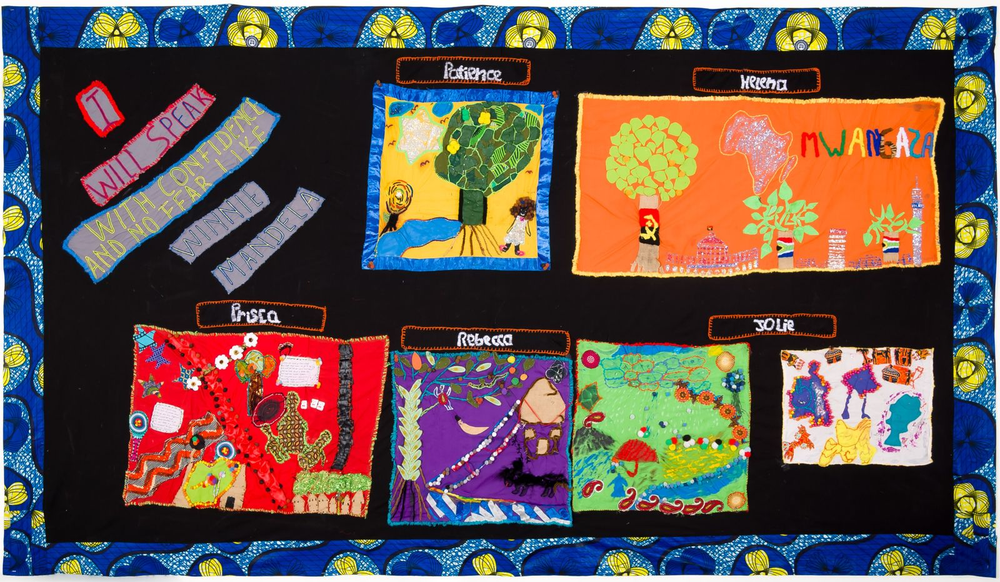
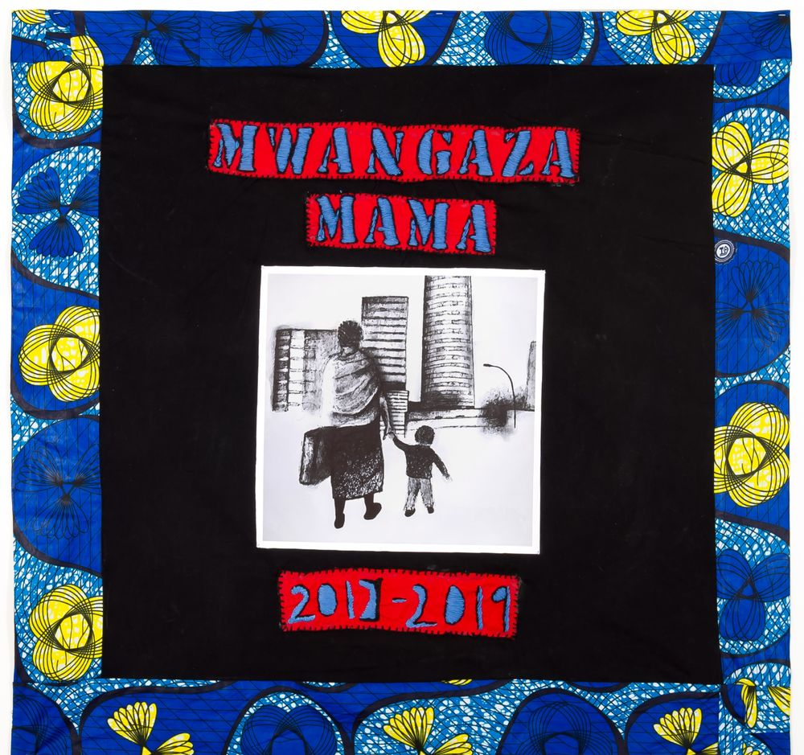
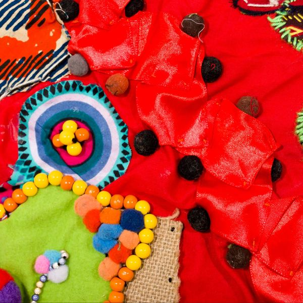
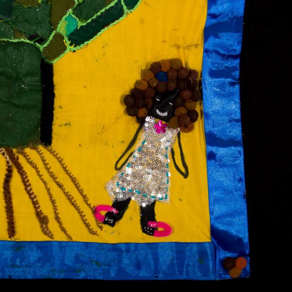
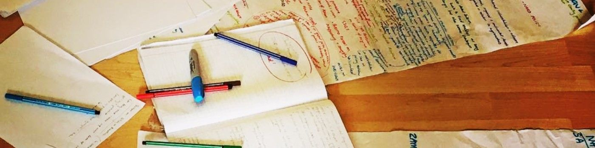
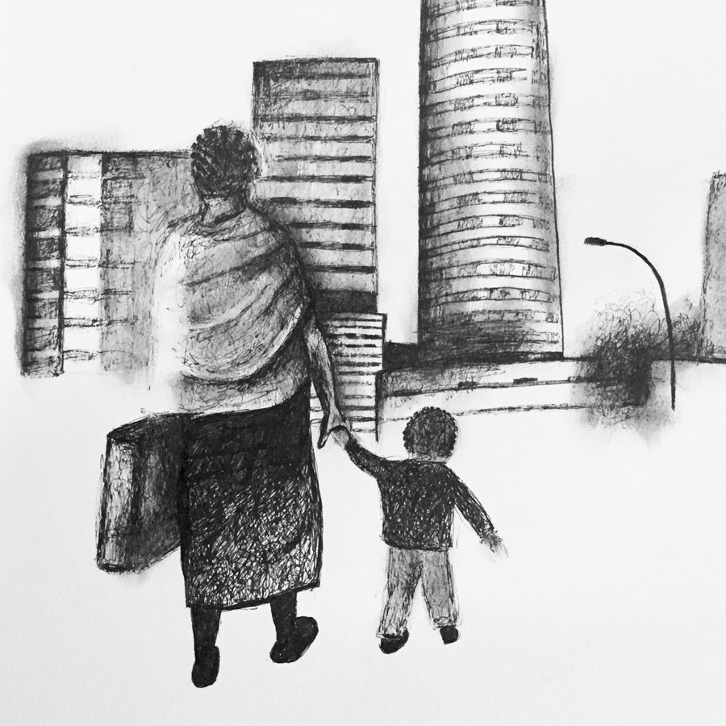
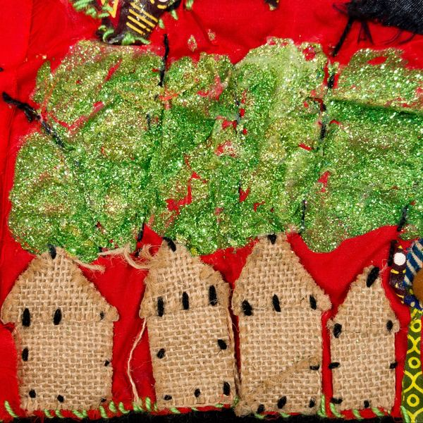
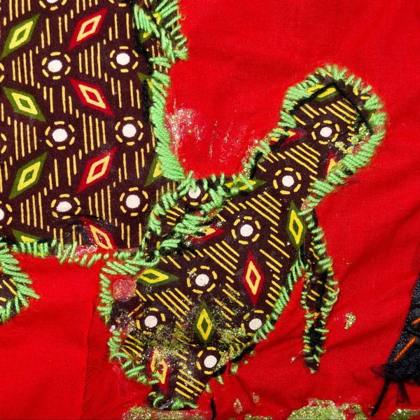

Impact of humanitarian and health funding cuts in Southern Africa
Assessed how funding cuts have affected services and the people who rely on them across the region.
Research on migration, health and rights that reaches the people who can act on it.
Led by Dr Rebecca Walker. I carry out research, policy and legal analysis and programme evaluation across Southern and East Africa, for governments, UN agencies, international NGOs, funders and civil society.




I'm a social anthropologist based in Cape Town. For more than ten years I have researched migration, health, gender, sex work and displacement, and how governments uphold or deny people's rights.
My work is rooted in social justice. I want research to be meaningful for the people who take part in it and valuable for those who use it. I work closely with civil society and community organisations, often over many years, and I make sure findings reach the people who can act on them, through advocacy, the courts and policy.
I often work with researcher colleagues, so that each project has the right mix of skills, languages and local knowledge.
I'm a Research Associate at the African Centre for Migration & Society (ACMS), Wits University, and a tutor on the University of London's MA in Refugee Protection and Forced Migration Studies. I publish in peer-reviewed journals and write regularly for the Daily Maverick and other media.

Qualitative, participatory and mixed-methods studies, from design and ethics through fieldwork, analysis and write-up.
Theory-based and end-term evaluations, impact assessments, change stories and best-practice documentation.
National, regional and comparative policy reviews, legal analysis and evidence for strategic litigation.
Advocacy strategies, policy briefs, plain-language guides, op-eds and broadcast-ready briefs that help turn evidence into change.
Stakeholder engagement, focus groups, workshops, training and practical guides for practitioners.
Postgraduate teaching on research methods, forced migration, health and humanitarian action, and supervision of Honours, Masters and PhD students. Courses taught ↓
Mwangaza Mama (2017 to 2019) was a two-year creative storytelling project with a small group of cross-border migrant women in Johannesburg. Through textile collage and their own stories, the women explored everyday life in the city and the issues that affect them.
Arts-based methods like these help people speak for themselves, across language barriers.
"I will speak with confidence and no fear like Winnie Mandela."Stitched on the group quilt



Some I led on my own, and others with researcher colleagues.
Assessed how funding cuts have affected services and the people who rely on them across the region.
A mixed-methods study on digital solutions to improve migrants' access to justice in South Africa, using surveys, arts-based research and interviews.
Qualitative lead and lead report writer for an evaluation of a peer learning network strengthening HIV prevention in five African countries.
Key informant interviews and policy analysis across Botswana, Lesotho, Malawi, Namibia, Uganda and Zimbabwe.
Qualitative research in Zambian border towns on protection gaps affecting young people on the move.
Reviewed ten years of evidence on xenophobic exclusion from health care, published as Countering Health Xenophobia in South Africa.
Developed an advocacy strategy for SASWA members and stakeholders.
Policy assessments of SADC child protection frameworks, HIV and migration policy for young people, and best practice for children on the move.
A regional review of migration and health law in Southern Africa, and a risk assessment of human trafficking in South Africa.
UNHCRUNICEFIOMMédecins Sans FrontièresSave the ChildrenGI-TOCGenesis AnalyticsARASARIATT-ESAScalabrini InstituteScalabrini Centre of Cape TownAPCOFLawyers for Human RightsHealth Justice InitiativeSonke Gender JusticeCentre for Child LawSASWABrot für die Welt
Full list on ORCID ↗. I also write for the Daily Maverick, News24, City Press, Business Day and The Conversation.
For research, evaluations, policy work, training or media requests, send a short note about what you need and your timeline.